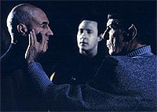
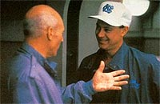
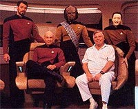
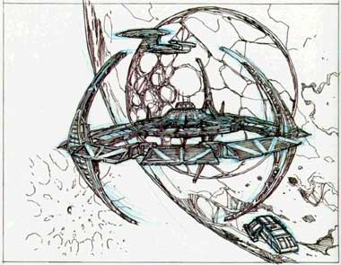
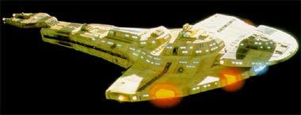
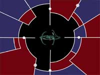
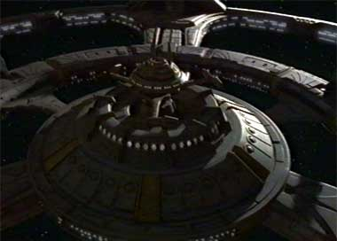
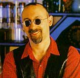

|
Captulo
1 - A Volta do Velho Oeste
Em 1991,
Jornada fazia 25 anos e comemorava com estilo
Jornada nas Estrelas teve trs grandes picos de popularidade na histria da franquia. O primeiro grande momento havia ocorrido em 1986, com o sucesso mundial do filme
"Jornada nas Estrelas IV: A Volta para Casa" (um dos fatores que possibilitou a estria da turma de Picard e cia. na telinha, um ano depois). O terceiro s viria em 1994, com o fim de
A Nova Gerao na TV seguido pelo encontro de Picard e Kirk em
"Jornada nas Estrelas: Generations" (impulso definitivo para o lanamento da srie
Voyager, juntamente com a estria da rede prpria de TV da Paramount, a UPN, em janeiro do ano seguinte). Mas, entre esses dois momentos,
houve o ano de 1991, quando se comemorou 25 aniversrio de Jornada
-- e a data festiva veio acompanhada de grandes novidades.
 Aos 25 anos de idade, a criao de Gene Roddenberry dava mostras de maturidade, e mesmo os conflitos entre os fs das geraes de Kirk e Picard pareciam coisas do passado.
A Nova Gerao teve a sua maior mdia de pblico em sua quinta temporada, e o encontro de Spock com Picard e Data em
"Unification" foi um grande sucesso --a concluso do episdio at mesmo simbolizava um literal elo entre as tripulaes das duas Enterprises.
O sexto filme de Jornada para o cinema foi uma concluso digna e emocionante da saga da tripulao original, tirando o gosto ruim do filme anterior da boca dos fs. Sua cena de encerramento (atravs do monlogo de Kirk) "passa a tocha" entre as geraes de uma forma sutil e tocante.
Em um ambiente de alta popularidade e de satisfao entre os fs, os executivos da Paramount (obviamente) tiveram a idia de produzir uma nova srie de
Jornada nas Estrelas para TV (a ser distribuda em syndication, como vinha sendo com
A Nova Gerao) para lucrar com a situao. Tal srie deveria ter exibio concorrente com a srie de Picard e cia. por uma temporada e meia e, aps a ida da
Nova Gerao para o cinema, continuar sua vida na tela pequena.
Antes de examinarmos as conseqncias de tal deciso dos executivos da Paramount, cabe registrar que, de todas as sries "modernas" de
Jornada, apenas Enterprise no foi precedida por um "boom" de popularidade da marca (muito pelo contrrio, ela foi lanada frente a um momento de baixssima popularidade). S o futuro poder responder se a srie de Archer e cia. poder reverter a situao e levar a um outro marco de grande popularidade da franquia ou no.
No final daquele ano, Brandon Tartikoff (ento um dos "cabeas" do estdio) procurou Rick Berman (ento pleno produtor-executivo de
A Nova Gerao) e o incumbiu do desenvolvimento da nova srie. O falecido (e extremamente querido no meio televisivo) Tartikoff sugeriu que o conceito de "Rifleman" (um homem e seu filho tendo que viver juntos em uma cidade da fronteira do "oeste bravio") fosse considerado. O executivo fez claramente uma analogia com o modo como Roddenberry tentou vender a sua criao para redes de TV nos anos 1960 -- "uma caravana para as estrelas" ("A Wagon Train To The Stars").
 Berman recrutou imediatamente na poca Michael Piller (ento tambm um produtor-executivo em
A Nova Gerao e possivelmente o mais importante nome de toda a era moderna --ps-1987-- de
Jornada nas Estrelas na TV) para ajudar na criao da nova srie. Berman disse em vrias entrevistas em anos posteriores que teve a bno de Roddenberry para o desenvolvimento do projeto (embora a ex-secretria de Gene, Susan Sackett, declare em seu livro que o criador de
Jornada teria ouvido a proposta de Berman e rechaado). De um jeito ou de outro, no resta dvida de que foi muito, muito perto do final da vida de Roddenberry --e ele j estava extremamente doente na poca.
Para o "Forte" do conceito do velho oeste de Tartikoff, foi considerada por algum tempo uma base em um planeta, conceito descartado em razo de seus custos proibitivos. Uma estao espacial ento se tornou uma escolha bvia. A inspirao do "velho oeste americano" se fez presente em diversos aspectos do desenvolvimento da nova srie, seja nos cenrios da estao ou mesmo na caracterizao de certos personagens. De fato o conceito inicial do "oficial de segurana" da nova srie descrevia "algum como Clint Eastwood".
Na poca, Piller se dizia ao mesmo tempo bastante empolgado com a tarefa e muito nervoso com a responsabilidade, pois pela primeira vez uma srie de
Jornada seria criada por outro que no Roddenberry. Definitivamente o produtor no queria repetir algo que j havia sido feito nas duas sries anteriores, e o diferente formato permitiria tocar em aspectos inexplorados do universo de
Jornada. Ainda assim, ele esteve sempre consciente da viso que Roddenberry tinha de
sua criao (eles trabalharam juntos por cerca de trs anos em A Nova Gerao) a cada etapa do processo.
A principal idia derivada do fato do palco da srie ser uma estao espacial foi a de que acontecimentos de um episdio iriam naturalmente influenciar episdios posteriores. Devido natureza estacionria do conceito, os personagens teriam que "lidar com as conseqncias de seus atos". Na poca, Piller disse que comparar o formato entre uma srie baseada em uma nave espacial e uma estao " como comparar uma aventura de uma noite com um casamento". Tal noo norteou claramente o desenvolvimento da nova srie. Faltava a Piller descobrir como introduzir conflito entre os personagens e ainda permanecer fiel ao esprito de Roddenberry.
 O falecido criador acreditava que no deveria haver conflito entre os personagens de uma srie de
Jornada. Sem excees, todos os regulares das duas primeiras sries eram oficiais da Frota Estelar e humanos em algum sentido (ou eram de fato humanos --integral ou parcialmente-- ou foram criados por humanos). Berman e Piller "reintepretaram" essa regra como se ela apenas estipulasse a impossibilidade de haver conflito entre oficiais da Frota Estelar.
Da surgiu a idia de introduzir personagens no-pertencentes Frota Estelar dentre os regulares, produzindo uma maior amplitude de possibilidades dramticas e ainda permanecendo fiel (segundo a interpretao escolhida pela dupla) ao que pregava o criador de
Jornada. Alm dos personagens no quererem estar ali em primeiro lugar, a estao por si s j seria pouco convidativa. Um ambiente aliengena e um outrora lugar de opresso e escravatura (protagonizadas por Cardassianos e Bajorianos respectivamente), completamente diferente da Enterprise (fosse ela de Kirk ou de
Picard).

Coube a Herman Zimmerman (que j havia trabalhado na primeira temporada de
A Nova Gerao e em filmes da marca para o cinema) combinar elementos do velho oeste com elementos gticos Cardassianos (do episdio
"The Wounded", da quarta temporada de A Nova Gerao) para produzir o distinto e instantaneamente reconhecvel visual da estao e da srie. Esta bizarra combinao de inspiraes levou a um ar atemporal para tal "instalao".

Alm dos Cardassianos, Piller decidiu que outras trs raas introduzidas em
A Nova Gerao fossem trazidas a bordo da nova srie. Os Bajorianos (de
"Ensign Ro", da quinta temporada), os Ferengis (de "The Last
Outpost", da primeira temporada), que tiveram algumas alteraes, e os Trills (de
"The Host", da quarta temporada), que foram to modificados com relao ao seu conceito inicial que dele literalmente "s sobrou o nome" da raa. O objetivo dos ajustes era fazer com que essas raas aderissem de forma orgnica identidade da nova srie.
 Piller
no se contentara apenas com a possibilidade j conseguida de estabelecer conflito. Ele queria expandir de verdade o conceito do que se entendia por
Jornada nas Estrelas na poca. Para isto ele colocou juntos tipos nunca antes vistos em
Jornada. Uma ex-terrorista Bajoriana, profundamente religiosa e com um dio mortal dos Cardassianos. Um solitrio transmorfo, obcecado por justia e em encontrar o seu povo e que fora outrora um formal "feitor de escravos" para os Cardassianos. E um barman Ferengi que vivia de trambiques. O produtor tambm no poupou inovaes (ao menos dentro do universo de
Jornada) nos temas a serem abordados.

Guerra, poltica, f e religio foram sempre assuntos examinados de forma "distante" em
Jornada at aquele ponto. Agora eles se tornariam o ncleo de temas de uma srie de tal marca. Seu oficial comandante seria o cone religioso de uma raa querendo entrar para a Federao --o que seria facilmente posto de lado pela Primeira Diretriz nas sries anteriores foi feito parte integrante do personagem desta vez. Esse oficial comandante no seria um capito, no teria uma nave para comandar (somente um monte de sucata Cardassiana caindo aos pedaos) e estaria muito mais preocupado em lidar com a ausncia de sua falecida esposa e a criao do seu filho do que em estabelecer algum recorde de idade de chegada ao almirantado. E, alm de tudo isso, ele seria negro. Piller no tinha medo de ousar e inovar, com idias que vinham sendo incubadas desde que comeou a trabalhar em
A Nova Gerao. Mas esse foi um plano de mudanas que ele no colocou em prtica sozinho.
O veteranssimo roteirista de TV Peter Allan Fields, que serviu como editor de histrias na quinta temporada de A Nova Gerao, foi trazido a bordo para a produo da nova srie. Tambm recrutaram um novato, de nome Robert Hewitt Wolfe, que mal acabara de vender a sua primeira histria para a turma de Picard e cia. Os dois se juntaram a Berman e Piller na parte criativa da temporada inaugural da nova srie. Mas no foram os nomes de Fields ou de Wolfe os primeiros que vieram cabea de Piller quando ele percebeu que precisaria de ajuda em sua nova empreitada.
 Ira Steven Behr se lembrou ao final da srie, sete anos mais tarde, como foi o seu primeiro dia na produo de
Deep Space Nine (que fez sua estria em 4 de janeiro de 1993). Lembrou-se de no haver som nos monitores do estdio nos primeiros dias de filmagem (no permitindo que os produtores vissem as cenas filmadas "do dia"), lembra tambm de ter que mudar o ator escalado para viver um certo vilo Cardassiano que no estava funcionando e dado o papel ao seu dono de direito. Behr participou da terceira temporada de
A Nova Gerao, mas acabou deixando a srie por que no gostava (de uma forma geral) dos seus personagens, da falta de conflito e do grande nmero de solues tcnicas para os problemas que surgiam. O que poderia fazer Behr com os bizarros personagens que Piller criara?
ndice
| Prximo captulo
|